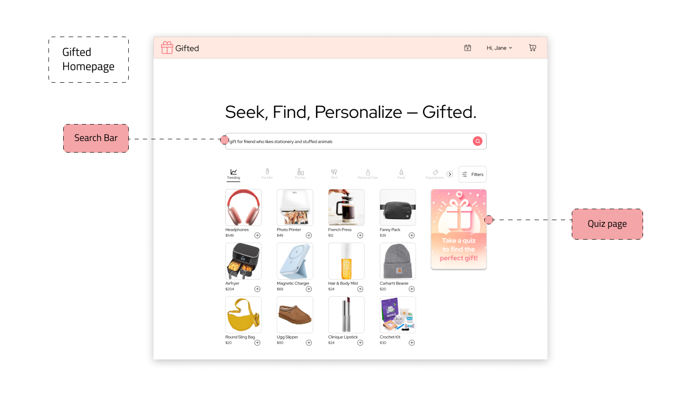
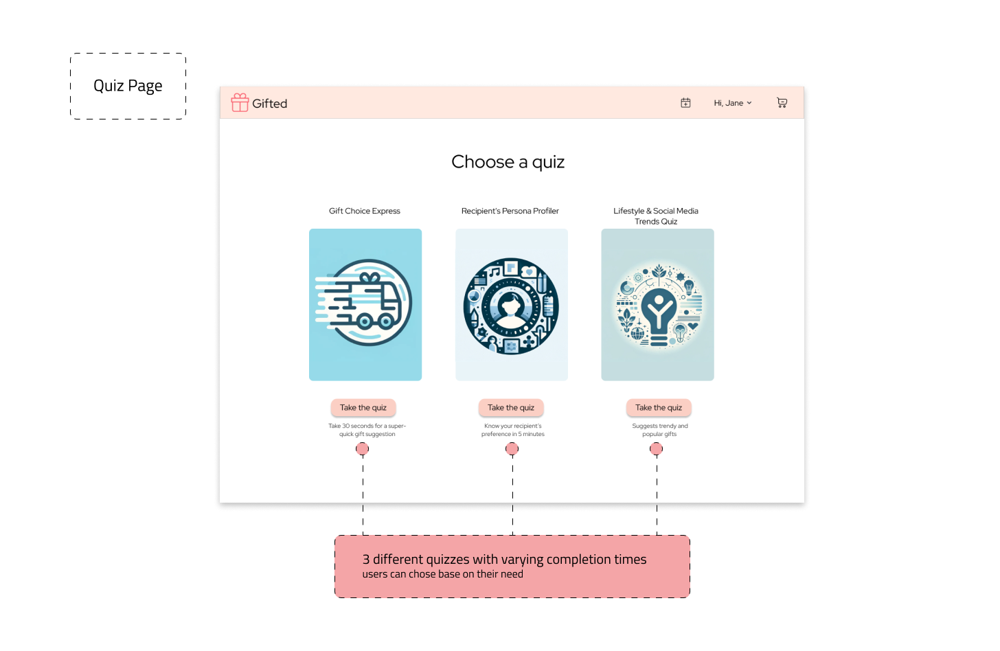
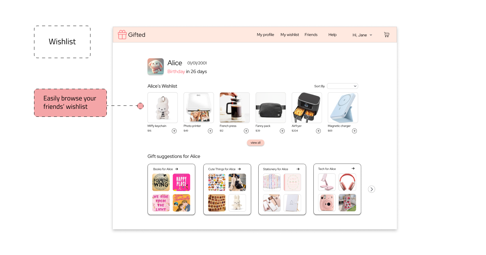
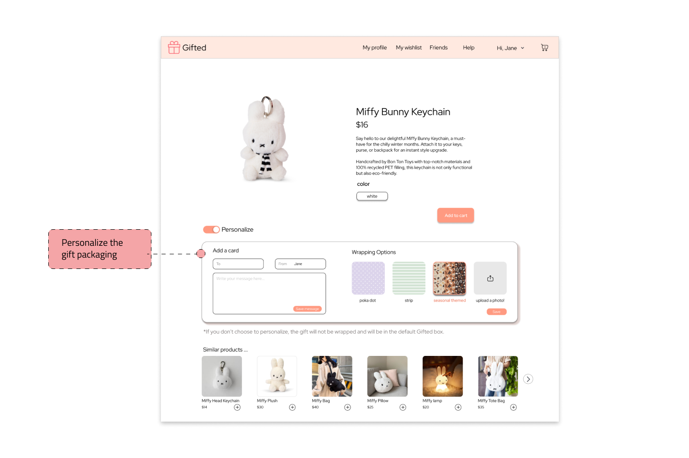

Part I
Diving Deep into the Problem Space
Initial Research Question
How do people decide what to give as gifts?

Interview

observation
“I just want to make sure that this gift is very personalized. This gift is something that the person needs and also reflects our friendship or relationship.”
"If I don’t know what to give, I’ll go through the website to find inspiration."
Key Takeaways
1. users need the gift to have personal touches
2. users want to minimize the time spent on selecting gifts
3. users want to feel confident about their gift choices
Final POV
Young gift-givers need to effectively find meaningful gifts for their loved ones so they can feel confident about their gift and show the recipient that they care throug personalized touches.
Part II
Hi-fi Prototypes




Part III
Usability Testing
Primary Objective
To determine the effectiveness and intuitiveness of different prototype features in aiding young (GenZ) gift-givers to find suitable gifts.
Specific Aims
• Assess the user-friendliness of each prototype.
• Identify which prototype (or combination of features) facilitates the most efficient gift-finding process.
• Understand user preferences regarding the length and content of the gift-finding quiz.
• Evaluate the impact of "tags" and "perfect for people who love" sections on decision-making
Key Takeaways

1. Preference for clickable question choices
Users didn’t like free-response questions on the quiz. They desire a guided, efficient, and less cognitively demanding interaction. We can redesign the quiz to be more user friendly.
2. People are happy to receive gifts, wishlist or not.
We were worried whether gifts from wishlists are special enough for the receiver. This takeaway eased our concerns and allows us to continue iterating.


3. Enhanced visibility of key features
Users didn’t notice the search bar from the homepage. The homepage design can be modified to emphasize the features more (keep search bar at top of page after scrolling).
Part IV
Next Steps
1. Combining the three solutions